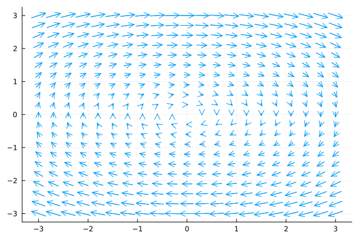
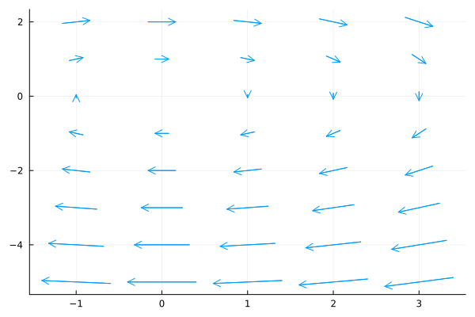

Vector Fields
Vector fields can be plotted via the (unexported) MathematicalSystems.VectorField type. First we give an example where the vector field is represented by a function that takes a two-dimensional state vector and returns the corresponding two-dimensional (derivative) vector:
using MathematicalSystems, Plots
f(x) = [2*x[2], -x[1]];
V = MathematicalSystems.VectorField(f);
plot(V)
Alternatively, one can also pass a continuous system:
S = LinearContinuousSystem([0.0 2; -1 0])
V = MathematicalSystems.VectorField(S);
plot(V)The above example shows the default grid of 20×20 points for the range $[-3, 3] × [-3, 3]$. A custom grid can be passed via the grid_points keyword argument, which takes a pair (x, y) whose entries specify ranges for the x and y coordinates of the grid points. For instance:
xrange = range(-1, stop=3, length=5);
yrange = range(-5, stop=2, length=8);
plot(V; grid_points=(xrange, yrange))
The implementation supports projective plotting of vector fields with more than two output dimensions. For that, one can use the dims keyword argument to pass a vector with the two dimensions to plot:
f(x) = [2*x[2], 42, -x[1]];
V = MathematicalSystems.VectorField(f);
plot(V; dims=[1, 3])